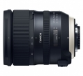

器材库 > 35mm画幅AF变焦镜头 > SP 24-70/2.8 Di VC USD G2（A032）

详细规格
镜头类型
标准变焦镜头
发布日期
2017-06-30
焦距
24mm-70mm
最大光圈
f/2.8
最小光圈
f/22
视角（对角）
84°04 - 34°21
镜头结构
17片/12组
非球面镜片
4片
低/超低色散镜片
3片
光圈叶片
9片
最近对焦距离
38cm
最大放大倍率
1:5
滤镜口径
82mm
镜头卡口
Canon EF, Nikon F
防抖
是
颜色
黑色
尺寸
佳能卡口：88.4×111mm尼康卡口：88.4×108.5mm
重量
佳能卡口：905g尼康卡口：900g
附件
花瓣形遮光罩，镜头盖，镜头袋
leo7312017-12-04 01:293 分
操作性 3.50耐用性 4.00性价比 0.50解像力 3.00色彩还原 3.50机械结构 3.50
匿名网友2017-11-03 21:514.08 分
操作性 4.50耐用性 5.00性价比 3.00解像力 3.00色彩还原 4.00机械结构 5.00
产品图 / 样片
SP 24-70/2.8 Di VC USD G2